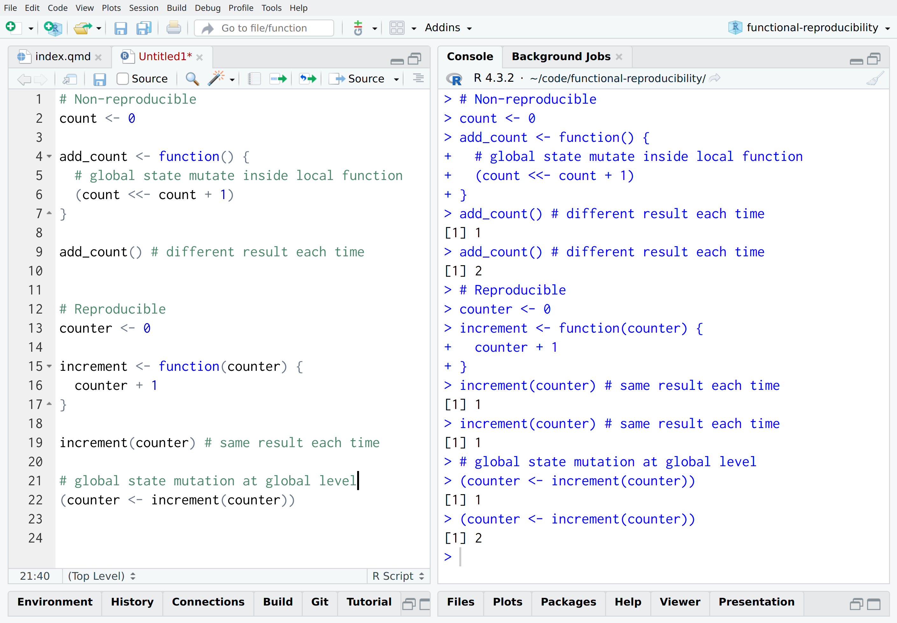

Functional Reproducibility
robsteranium.github.io/functional-reproducibility
robin@infonomics.ltd.uk
- Reproducible adj.
- (of a measurement, experiment etc) capable of being reproduced at a different time or place and by different people.
NASA (2011) “Benevolent Monster” Solar Flare
Schreinmer, R.M. (1912) Deutsches Museum, München
© The Board of Trustees of the Science Museum released under a CC BY-NC-SA 4.0 license at collection.sciencemuseumgroup.org.uk
{kind=link}
Increasing Disorder CC BY Htkym
{kind=link}
Maxwell’s Demon CC BY Htkym
Photo by Dan Meyers on Unsplash
Advanced Deep Extragalactic Survey - NASA, ESA, CSA
Brant Robertson (UC Santa Cruz), Ben Johnson (CfA), Sandro Tacchella (Cambridge), Marcia Rieke (University of Arizona), Daniel Eisenstein (CfA)
\[f(x) = \frac{1}{\sigma \sqrt{2\pi} } e^{-\frac{1}{2}\left(\frac{x-\mu}{\sigma}\right)^2}\]

Engineering reproducibility
in the face of entropy
Isn’t code reproducible?
Reading from a database:
Drawing a sample at random:
Writing to a filesystem:
None of them are reproducible!
Pure functions are reproducible
Side-effects aren’t reproducible
Non-local state makes functions sensitive to context
Count is 0Sometime later…
Explicit inputs/ outputs let us separate code and context
[1] "Count is 0"Sometime later…
The context isn’t always apparent
[1] "tails" "heads" "tails" "tails" "tails"Sometime later…
Pseudo-randomness from a Mersenne Twister
We can make the context explicit
[1] "tails" "tails" "tails" "tails" "heads"Sometime later…
I/O is side-effecting
Input is a side-effect
Output is a side-effect
Dependency-injection is explicit
Instead of relying on global state:
We can make dependencies explicit:
Execution context is explicit
Command-line arguments
Environment variables
Configuration data
Functional pipeline,
configured context
Lessons from software development
Versions are values over time
It is impossible to step in the same river twice
Heraclitus c.a. 500 BC, possibly apocryphal
Automation proves reproducibility
Builds should be:
- deterministic
- automated
- ephemeral
Continuous Everything
- Continuous integration
- run, test and package code
- Continuous training
- fit parameters or run experiments
- Continuous delivery
- deploy models and applications for inference
- Continuous evaluation
- calculate and monitor performance metrics
Notebooks as an anti-pattern
Read-Evaluate-Print-Loop
Engineering reproducibility
- Decay is a physical inevitability but maths is eternal
- Pure functions on immutable data are reproducible
- Keep the core of your data flow as pure as possible
- Extract side-effects and inject dependencies explicitly
- Use version control for code, models and data
- Automate workflows for continuous development
Functional Reproducibility
robsteranium.github.io/functional-reproducibility
robin@infonomics.ltd.uk